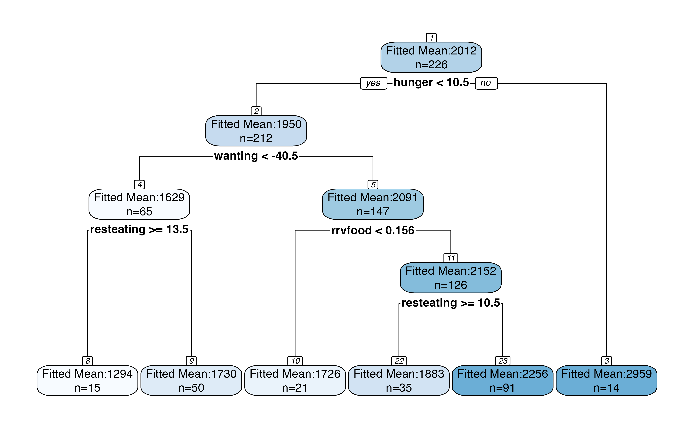
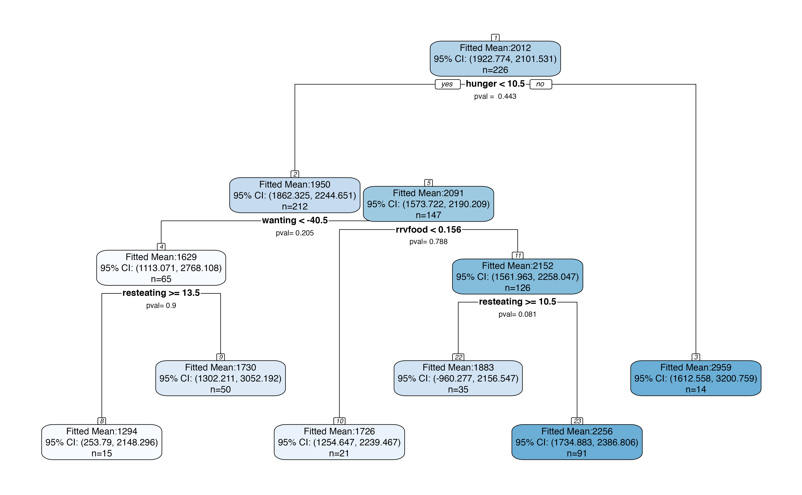
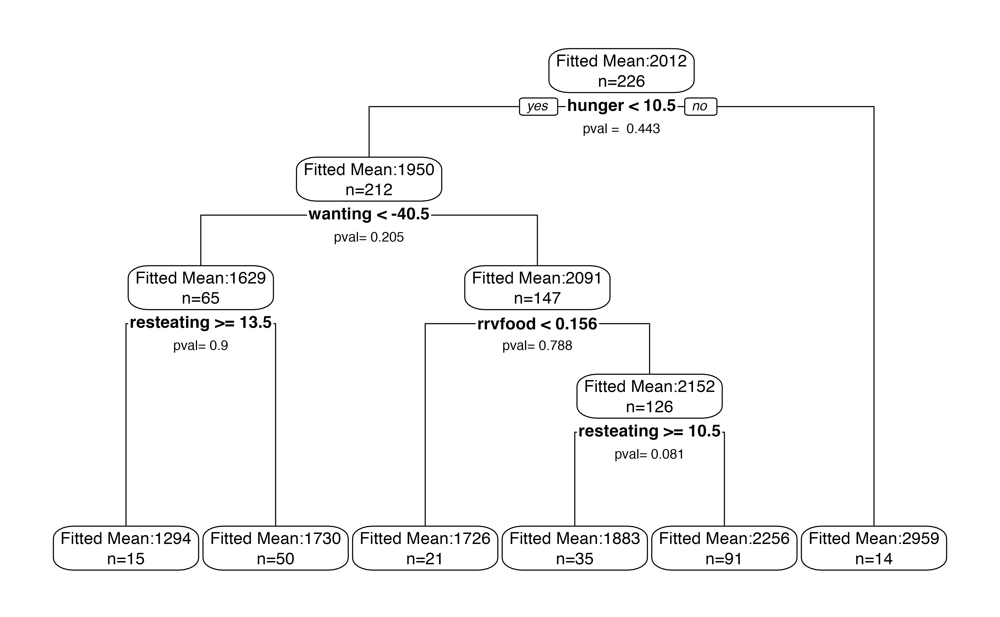

Tutorial: using treevalues to perform inference on rpart trees
Source: vignettes/inference_tutorial.Rmd
inference_tutorial.RmdIn this tutorial, we demonstrate how to use the treevalues package to perform inference on a CART (Breiman et al. (1984)) tree fit using the rpart package (Therneau and Atkinson (2019)). Throughout this tutorial, we work with an example tree fit to the Box Lunch Study dataset, which was originally provided in the visTree package (Venkatasubramaniam and Wolfson (2018)) and described in Venkatasubramaniam et al. (2017).
We start by loading the two packages we will be working with. Make sure that remotes is installed by running install.packages("remotes"), then type
remotes::install_github("anna-neufeld/treevalues")
library(treevalues)
library(rpart)
data(blsdata, package="treevalues")Building the tree
The treevalues package is designed for use with the rpart package, and so all trees should be built using rpart. All trees should be built with the parameter model=TRUE, which saves a copy of the training data inside of the fitted rpart object (this is useful so that the data need not be separately passed to each inference function).
bls.tree <-rpart(kcal24h0~hunger+disinhibition+resteating+rrvfood+liking+wanting, model = TRUE, data = blsdata, cp=0.02)The argument cp, or complexity parameter, is a scaled version of the complexity parameter \(\lambda\) described in our manuscript. For response variable \(y\), \(\lambda =\text{cp} \times \sum_{i=1}^n (y_i-\bar{y})^2\). The larger the value of cp, the more the tree will be pruned.
We begin by plotting our tree. While we could plot the tree using plot() from the rpart package, or rpart.plot() from the rpart.plot() package, we instead use our internaltreeval.plot() function. To start, we set inferenceType=0 (no p-values or confidence intervals are computed).
treeval.plot(bls.tree, inferenceType=0)
A useful feature of the plot above is that it displays node numbers for each region in the tree. We will be using these numbers to identify the regions that we want to perform inference on.
Inference on a pair of sibling regions.
Suppose we are interested in the whether or not the bottom-left split on resteating >= 14 is “statistically significant.” This means that we want a p-value for the difference in means between the nodes labeled 8 and 9 in the plot above. Inference on this difference in means involves conditioning on the event that the branch that led to this split appeared in the tree; see Neufeld, Gao, and Witten (2021) for details. We first need to extract this branch.
branch <- getBranch(bls.tree,8)
branch
## [1] "hunger < 10.5" "wanting < -40.531939285"
## [3] "resteating >= 13.5"We now pass this branch into branchInference. We specify that we are interested in the difference between region 8 and its sibling by setting type="sib". The ``branchInference function returns a p-value for the test of the null hypothesis that regions 8 and 9 have the same mean response. It also returns a confidence interval for the true difference in means between the regions. In this case, the confidence interval includes 0 and the p-value is large.
result <- branchInference(bls.tree, branch, type="sib")
result$confint
## [1] -1106.7470 136.5523
result$pval
## [1] 0.9002555By default, a 95% confidence interval is computed. We can change the confidence level by specifying \(\alpha\) such that a \((1-\alpha)\) confidence interval is returned.
result <- branchInference(bls.tree, branch, type="sib", alpha=0.1)
result$confint
## [1] -667.0025 106.8585The full result object contains a little bit of additional information, such as the actual conditioning set that was computed and the sample statistic.
result$condset
## Object of class Intervals_full
## 2 intervals over R:
## (-543.236399481531, -428.125574226105)
## (428.125574226104, 929.97322312961)
result$samplemean
## [,1]
## [1,] -435.6817The sample statistic falls relatively close to the boundary of the truncation set, which explains the large p-value and the wide confidence interval. See Kivaranovic and Leeb (2018) for details.
In our framework, it is assumed that \(y_i \sim N(\mu_i, \sigma^2)\) and \(\sigma^2\) is assumed known. If no argument sigma_y is provided to the inference function, the conservative estimate \(sd(y)\) is used.
Inference on a single region
Suppose that we instead just want a confidence interval for the mean result within region 8. We simply change the type argument.
branchInference(bls.tree, branch, type="reg", alpha=0.05)
##
## Sample statistic: 1294.109
## 95% confidence interval: 253.7905, 16592.033
## Type: reg
## p-value for test that param=0: 0.01663048
## Conditioning Set:
## Object of class Intervals_full
## 1 interval over R:
## (1224.75070250313, 1301.6652990799)By default, when type="reg", the function branchInference() conditions on the event that the exact branch branch appears in the tree. As mentioned in Neufeld, Gao, and Witten (2021), there is potential for higher powered inference if we actually condition on all possible permutations of the branch. Conditioning on all possible permutations increases power and, in this case, makes the confidence interval significantly narrower.
branchInference(bls.tree, branch, type="reg", alpha=0.05, permute=TRUE)
##
## Sample statistic: 1294.109
## 95% confidence interval: 253.7905, 2148.2956
## Type: reg
## p-value for test that param=0: 0.01663048
## Conditioning Set:
## Object of class Intervals_full
## 2 intervals over R:
## (1224.75070250313, 1301.6652990799)
## (2868.72223626769, 3427.28431563896)While this seems like an argument for always setting permute=TRUE, we note that computations can be prohibitively slow for large trees when permute=TRUE. We also note that adding permute=TRUE tends to make a large difference only in trees where the overall signal is weak. Trees with strong signal and highly significant splits tend to be more stable, and in more stable trees the addition of permute=TRUE does not tend to substantially shorten confidence intervals.
Inference for the entire tree
We can bypass the need to specify a specific branch by making the following plot, which includes p-values for each split and confidence intervals for each region. We can just see this in a plot. By default, the plot makes 95% confidence intervals for the mean within each region and reports p-values for a test of no difference in means across each split. When looking at a large tree, this plot should be interpreted with care; the p-values have not been corrected for multiple testing.
treeval.plot(bls.tree)
If we set permute=TRUE, we will get slightly narrower confidence intervals in each node, at the expense of computation time.
treeval.plot(bls.tree, permute=TRUE)
Custom plotting
There are many ways to customize the output of treeval.plot. If the default version is too congested, alternate values of inferenceType can be provided to customize how much information is displayed. Additonal arguments provided will be passed on to `rpart.plot().
The computationally intensive part of creating the plots is appending p-values and confidence intervals to the tree’s frame. If you plan to plan to play around extensively with plot formatting, you can avoid re-computing the p-values and confidence intervals for each plot by pre-augmenting the tree frame with this information. After running the inferenceFrame function once (this can run slowly, particularly if permute=TRUE), each plot can be made quite quickly.
bls.tree <- inferenceFrame(bls.tree, permute=TRUE)
treeval.plot(bls.tree, inferenceType=1, printn=TRUE, box.col="white", nn=FALSE)
treeval.plot(bls.tree, inferenceType=2, printn=TRUE, box.col="white", fallen.leaves=FALSE)